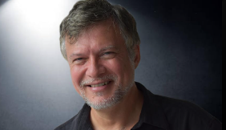

Inicio
Este portafolio es un reflejo de mi viaje en el fascinante mundo de la Ingeniería Informática. Aquí encontrarás una colección de mis proyectos, habilidades y logros que he adquirido a lo largo de mi formación académica. Mi objetivo es compartir mis experiencias y demostrar mi pasión por la tecnología y la innovación.
Sobre mí
Como futura ingeniera informática, la tecnología y su capacidad transformadora son mi mayor pasión. Actualmente, curso el octavo ciclo de Ingeniería Informática en la Universidad Peruana Cayetano Heredia, donde he desarrollado sólidas habilidades en diversas áreas, con especial interés en el desarrollo de software, la ciencia de datos y la inteligencia artificial. A lo largo de mi trayectoria académica, he participado en proyectos desafiantes que me han permitido aplicar mis conocimientos y trabajar en equipo, valorando enormemente la colaboración y la comunicación efectiva como pilares fundamentales para el crecimiento profesional. Cada experiencia, ya sea un éxito o un obstáculo, se convierte en una oportunidad para aprender y mejorar, impulsándome a seguir creciendo como profesional y a contribuir a proyectos que generen un impacto positivo en la sociedad.
Proyectos
Cada proyecto ha sido un paso más en mi camino para comprender cómo las tecnologías emergentes pueden integrarse para resolver problemas del mundo real. Desde la creación de sistemas de monitoreo inteligente hasta la implementación de redes de sensores, he trabajado en iniciativas que reflejan mi interés por la automatización, la sostenibilidad y el impacto positivo que puede tener la tecnología en nuestro entorno.
En esta sección, presento una selección de los proyectos más destacados que he realizado. Cada uno de ellos ha sido cuidadosamente desarrollado para abordar problemas específicos, ya sea en el ámbito del medio ambiente, la gestión de datos o el desarrollo de software inteligente. Espero que encuentres en estos proyectos una muestra del crecimiento y compromiso que tengo con la tecnología y su capacidad para transformar realidades.
Desarrollo de un Sistema Prototipo para el Monitoreo de la Calidad del Agua en Humedales usando Sensores de pH y Conductividad
Este proyecto aborda la creación de un sistema prototipo para el monitoreo y detección de la calidad del agua en humedales utilizando sensores inteligentes. El enfoque principal es la implementación de sensores de pH y de conductividad para medir parámetros clave en el agua, como la acidez y la conductividad, que son indicadores de su calidad. Se utilizó la plataforma Ubidots para la visualización de los datos recolectados en tiempo real.
Innovación en la Ingeniería: Prototipo de Lavadora de Gases para la Reducción de NH3 en la Industria Avícola
Este proyecto se enfoca en el diseño y construcción de un prototipo innovador de lavadora de gases, cuyo objetivo es reducir la concentración de amoníaco (NH3) en el aire dentro de las industrias avícolas. La exposición prolongada al amoníaco puede afectar la salud de los trabajadores, las aves y el medio ambiente, por lo que este sistema ofrece una solución eficaz para mejorar la calidad del aire y promover prácticas sostenibles. Este desarrollo integra tecnología de sensores y automatización para monitorear y disminuir las emisiones, impactando positivamente en la productividad avícola y la calidad de vida de la comunidad cercana.
RITMO: Inmersión en Realidad Virtual y Música Terapéutica para Adultos Mayores
Un innovador proyecto que combina la inmersión en realidad virtual con la música terapéutica, diseñado especialmente para adultos mayores. En un mundo donde la tecnología y la salud mental se entrelazan, RITMO ofrece una experiencia única que promueve el bienestar emocional y cognitivo a través de la interacción musical.
Aplicativo de Comunicación Remota entre Docentes y Estudiantes para el Uso de Simulaciones Virtuales
Este proyecto tiene como objetivo desarrollar un aplicativo que facilite la comunicación remota entre docentes y estudiantes en situaciones en las que los primeros no puedan asistir presencialmente a las sesiones de prácticas, ya sea por motivos imprevistos o programados. El aplicativo está diseñado para estudiantes que utilizan simulaciones virtuales en un salón especializado, que cuenta con dispositivos Hápticos, donde realizan sus prácticas.
Repositorios de Código
Puedes encontrar mis proyectos en GitHub: tu-usuario
Certificaciones
A lo largo de mi formación profesional, he obtenido diversas certificaciones que reflejan mi compromiso con el aprendizaje continuo y el desarrollo de habilidades especializadas. Estos certificados abarcan áreas como la computación en la nube, la gestión de proyectos ágiles, y la optimización de procesos, entre otros. Cada uno de ellos me ha permitido aplicar conocimientos prácticos a mis proyectos y mejorar mi rendimiento en el entorno profesional.
Además, actualmente me encuentro en proceso de recibir otros certificados, lo que me permitirá seguir ampliando mi conjunto de habilidades y mantenerme al día con las últimas tendencias tecnológicas y metodológicas.
Sentiment Analysis with Deep Learning using BERT
Este certificado de Coursera me permitió desarrollar habilidades en análisis de sentimientos utilizando técnicas avanzadas de Deep Learning y el modelo BERT, ampliamente utilizado en el procesamiento de lenguaje natural (NLP). Aprendí a implementar redes neuronales para extraer emociones y opiniones de grandes volúmenes de texto, lo cual ha mejorado mi capacidad para trabajar en proyectos relacionados con la interpretación automatizada de datos de usuarios, mejorando la toma de decisiones basada en opiniones reales.
Ver CertificadoAWS Academy Cloud Foundations
Este certificado de la AWS Academy me proporcionó una comprensión fundamental de los servicios en la nube de AWS, cubriendo temas como almacenamiento, redes, bases de datos, y seguridad en la nube. Con 20 horas de formación, este curso me ayudó a desarrollar habilidades para implementar soluciones en la nube que optimizan el uso de los recursos y promueven la escalabilidad. Esta base ha sido esencial en mi carrera, permitiéndome manejar proyectos más complejos con una comprensión sólida de las infraestructuras en la nube.
Ver CertificadoScrum Foundation Professional Certification (SFPC)
Este certificado otorgado por CertiProf acredita mi comprensión de los principios y marcos ágiles basados en Scrum. A través de este programa, adquirí habilidades clave para liderar y participar en equipos de desarrollo organizados en sprints, promoviendo la colaboración y mejora continua. Esta certificación ha sido fundamental para optimizar la gestión de proyectos, facilitando la entrega de productos de alta calidad en ciclos de trabajo iterativos.
Ver CertificadoLean Six Sigma White Belt Professional Certification (LSSWBPC)
Esta certificación de CertiProf me introdujo a los principios fundamentales de Lean Six Sigma, que combina metodologías de mejora continua y eliminación de desperdicios en procesos. Gracias a esta certificación, adquirí habilidades para identificar y resolver problemas de eficiencia dentro de organizaciones, utilizando técnicas básicas de análisis y optimización. Este conocimiento ha sido valioso para mí.
Ver CertificadoBusiness Intelligence Foundation
Esta certificación me proporcionó una base sólida en los conceptos y herramientas de Business Intelligence. Aprendí a recopilar, analizar y visualizar datos para generar información valiosa que apoye la toma de decisiones estratégicas en las organizaciones. Adquirí habilidades en el uso de software de BI, la creación de cuadros de mando y la interpretación de indicadores clave de rendimiento (KPIs).
Ver CertificadoIntereses Personales
Siempre he creído que nuestros intereses son una ventana a nuestra personalidad y nos enriquecen de maneras únicas. A continuación, comparto algunas de mis pasiones y actividades que disfruto en mi tiempo libre, que reflejan quién soy y lo que valoro.
Tecnología e Innovación
Me gusta explorar las últimas innovaciones y cómo estas pueden hacer que nuestras rutinas sean más eficientes. Disfruto de aprender sobre inteligencia artificial, programación y desarrollo de software. Cada nuevo avance me inspira a seguir aprendiendo y ganar experiencia.
Medio Ambiente
Me interesa la conservación del medio ambiente. Me gusta informarme sobre prácticas sostenibles y cómo podemos cuidar nuestro planeta para las futuras generaciones.
Danza
La danza es una de mis formas favoritas de expresión. Disfruto de diferentes estilos y me gusta participar en ello. Además, me permite liberar energía y conectarme con la música de una manera única.
Deportes
El voleibol es mi deporte favorito. Es una gran manera de mantenerme activo y disfrutar de momentos divertidos con amigos.
Aprendizaje y Lectura
Me gusta leer libros, y uno que considero especialmente interesante para mi carrera es "The Pragmatic Programmer" de Andrew Hunt y David Thomas. Este libro ofrece valiosos consejos prácticos y principios que son esenciales para cualquier desarrollador.
Viajes
Me encanta viajar y conocer pueblitos nuevos. Cada lugar tiene su propia historia y cultura que me fascina descubrir. Disfruto de probar la comida local y aprender sobre las tradiciones de cada región.
Mi Currículum Vitae
¡Hola! Soy Xiomara More y aquí puedes encontrar mi currículum vitae, donde detallo mi experiencia profesional, educación y habilidades. Si deseas conocer más sobre mi trayectoria, no dudes en descargar el archivo a continuación:
Descargar mi CV